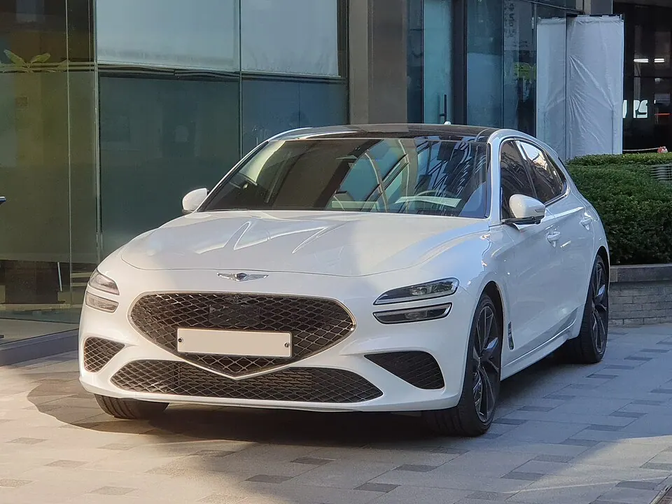
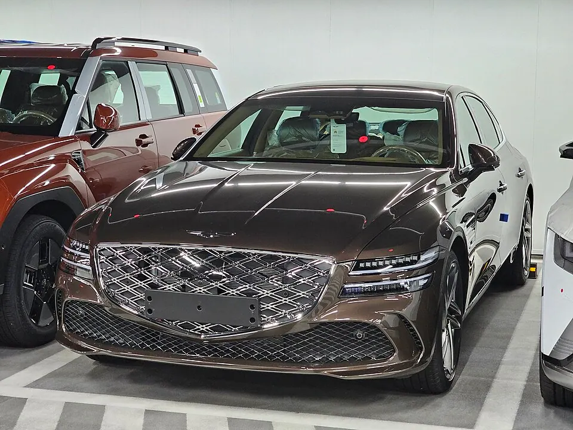
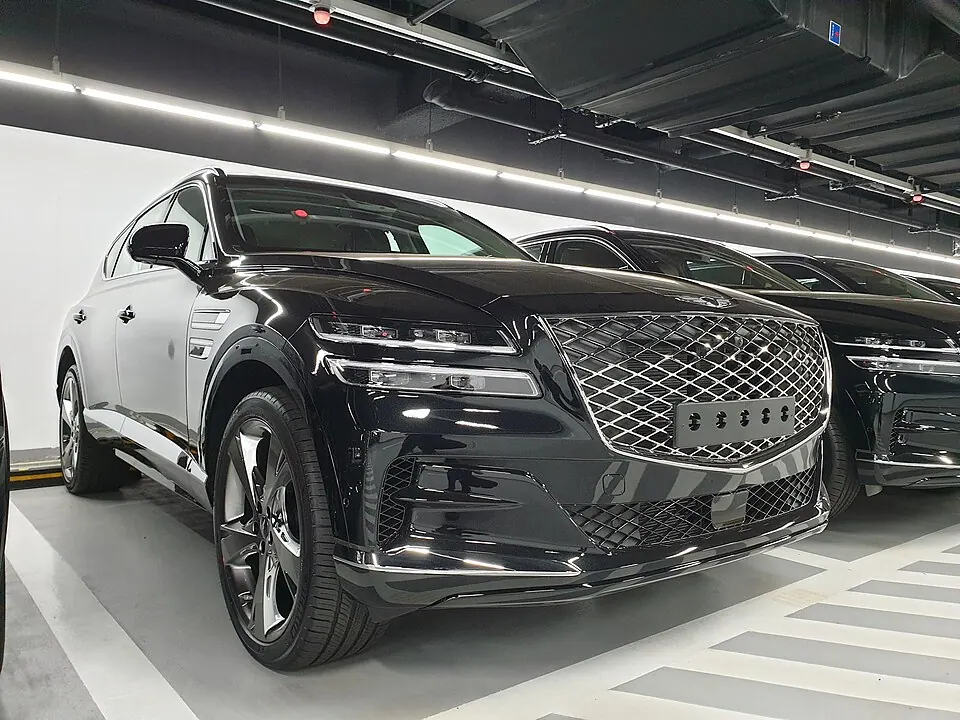

사진 · MercurySable99 · CC BY-SA 4.0가솔린 · 디젤G70공개 사양83개복합 효율가솔린8.4–11.2 km/L디젤13.1–15.2 km/L연비·세금·에너지비 →
사진 · Damian B Oh · CC BY-SA 4.0가솔린G70 Shooting Brake공개 사양28개복합 효율가솔린9.1–10.9 km/L연비·세금·에너지비 →
사진 · Damian B Oh · CC BY-SA 4.0가솔린 · 디젤G80공개 사양79개복합 효율가솔린8–10.8 km/L디젤12.1–14.6 km/L연비·세금·에너지비 →
사진 · Damian B Oh · CC BY-SA 4.0가솔린 · 디젤GV80공개 사양144개복합 효율가솔린7.8–9.7 km/L디젤10.3–11.8 km/L연비·세금·에너지비 →